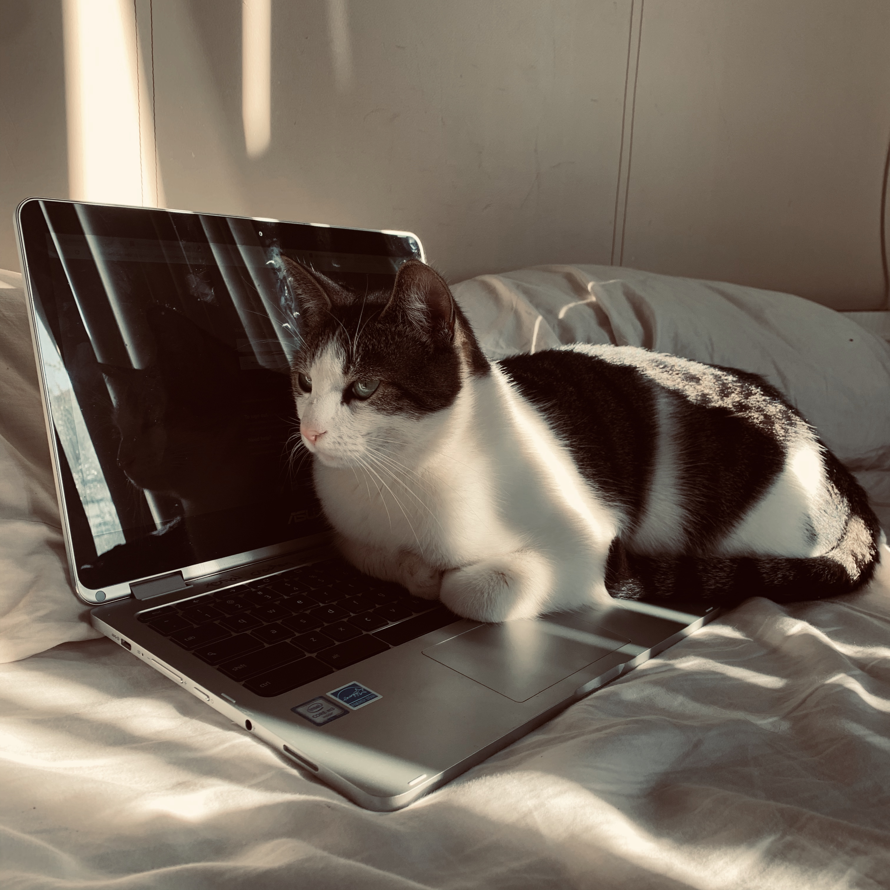
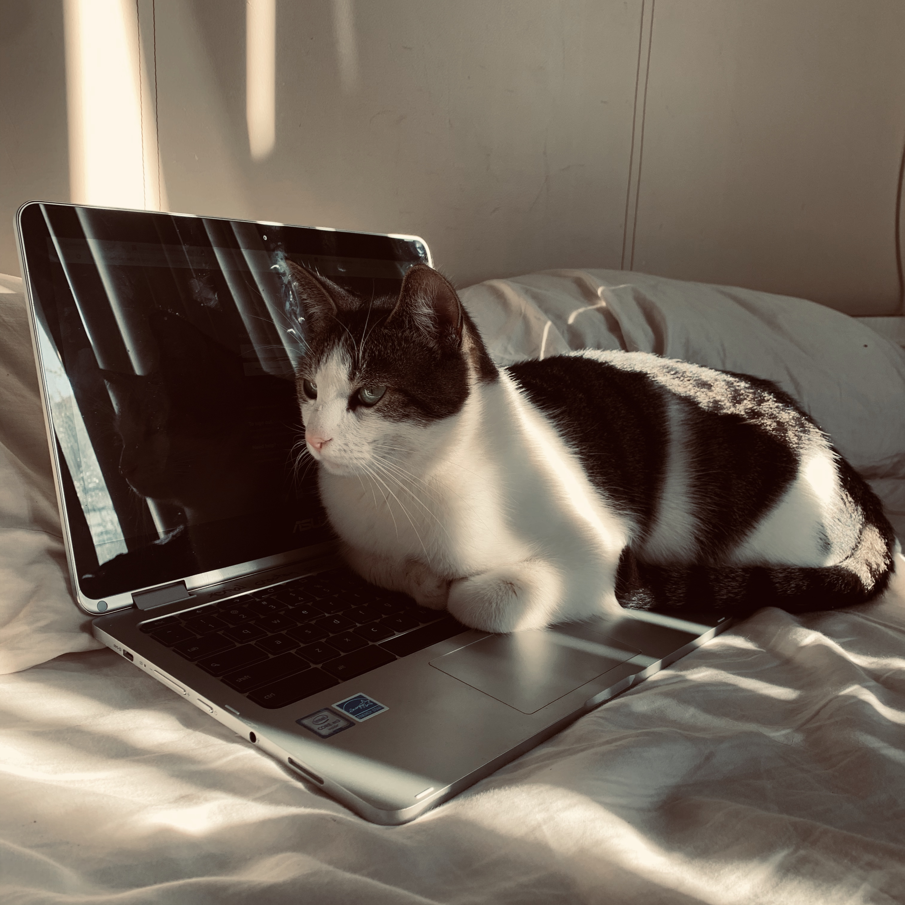

A couple years ago, I decided to get some animal companions. I visited Michelson Found Animals in LA, and found these two furry creatures cuddling each other. I couldn't just take one of them, so the adoption people gave them both to me for the fees of one. They each have suffered some neglect and abuse in their past, but after a little bit of warmth and nurturing, they turned into cuddly goofballs. If you are considering adopting a furry friend, please consider going to a shelter or adoption agency!

Scout
age: 2.5 years
hobbies: climbing to high places, bird watching, cuddling Captain
favorite toy: fake-mouse
suspicious of: tea kettle, my neighbor Dave

Captain
age: 3 years
hobbies: following humans, crashing Zoom meetings, cuddling Scout
favorite toy: ping pong ball
suspicious of: cacti🌵, amazon packages
more pictures

 
